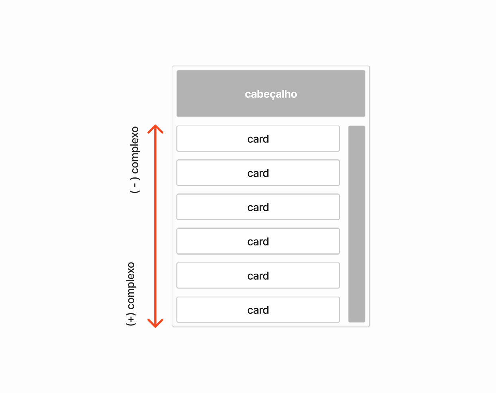
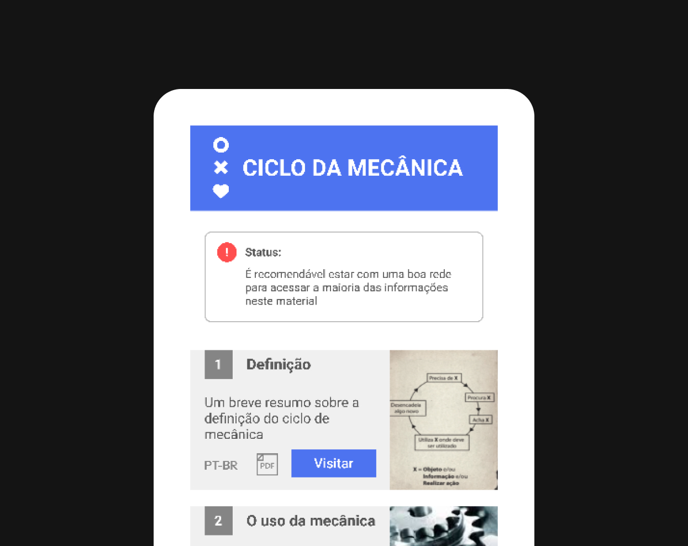

( 7 ) MDP
o cosmos do usuário
O Material Direcional Pedagógico (MDP) é um PDF interativo desenvolvido para
apoiar o aprendizado prático de desenvolvimento de jogos digitais, apresentando
conceitos essenciais da disciplina de forma clara, acessível e adaptada a dispositivos
móveis. Criado com foco na autonomia do estudante e na facilidade de uso pelo professor,
o MDP funciona como um guia compacto, dinâmico e leve, que pode ser utilizado sem necessidade
de internet, site ou aplicativo. Seu principal objetivo direcionar o aprendizado de forma
estruturada e visual, facilitando a compreensão dos processos que envolvem a criação de um jogo
digital, desde as regras e mecânicas até a animação e estilo visual.

O MDP é dividido em cards que organizam os conteúdos em escala de complexidade.
Ícones de conteúdo apresentam qual tipo de arquivo está disponível no pdf.
Arquivo introdutório para cada área, facilitando a compreensão do estudante.

Prévia do arquivo por imagem resumida e linguagem do conteúdo.